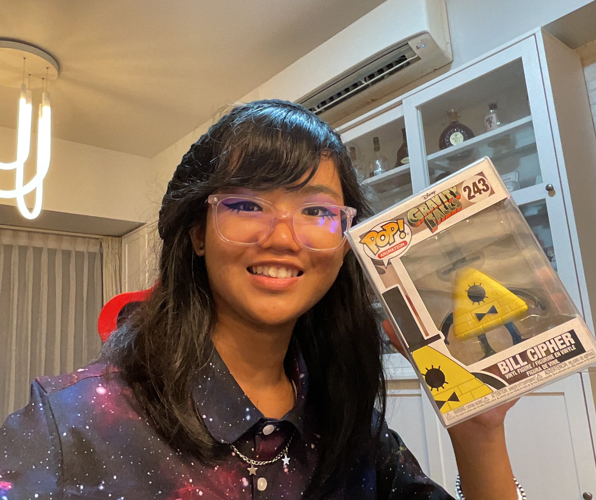
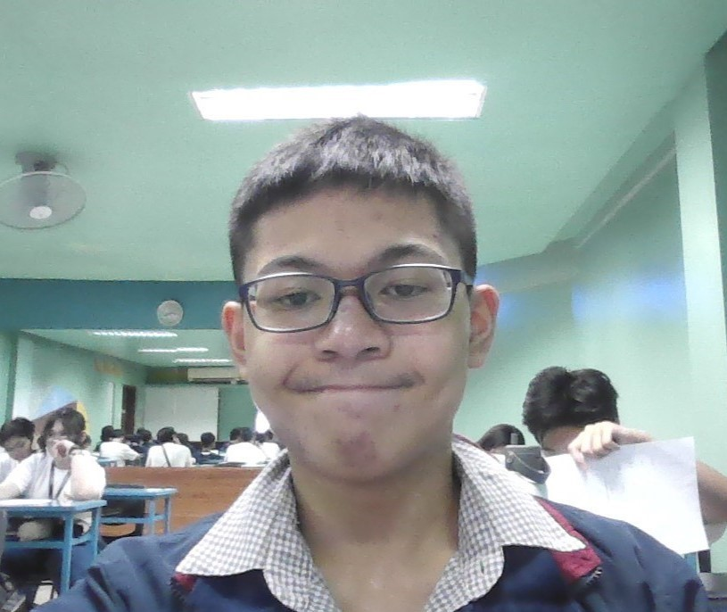
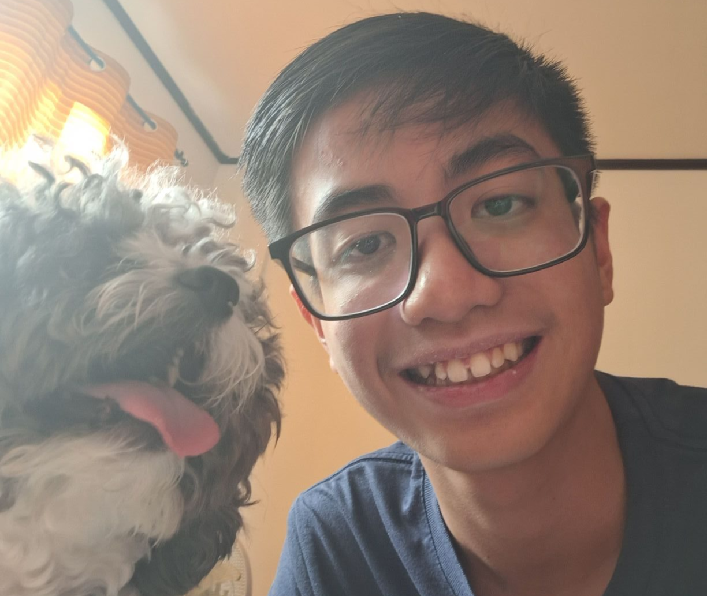
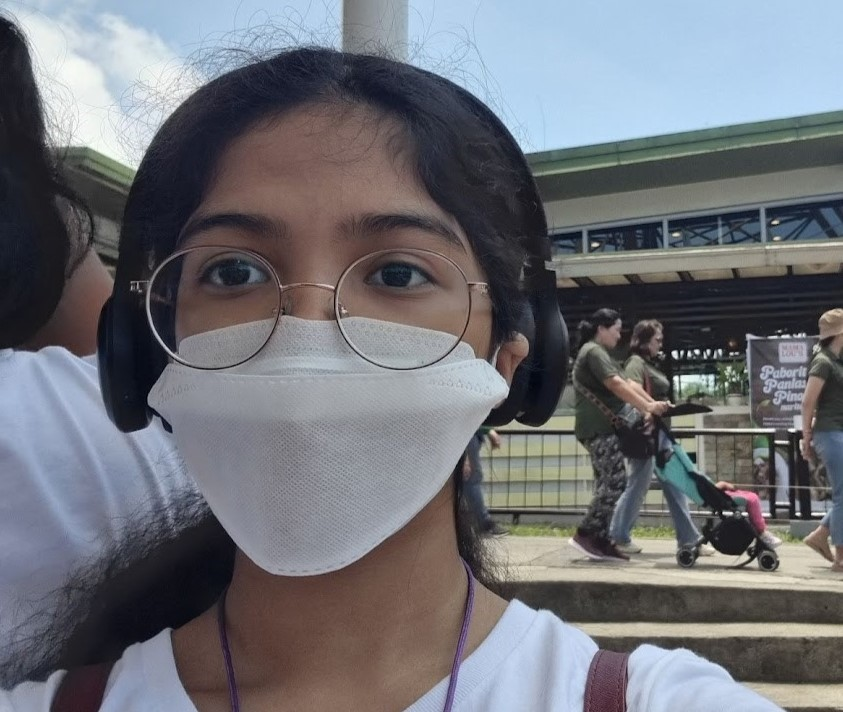

What's Next for Group 7?

- What are your expectations for next year in ICT?
- "just regular ICT lessons"
- "What do you plan to do during the summer vacation?"
- "Play guitar and do random things"
- Elaine

- What are your expectations for next year in ICT?
- "Understand more about coding and programming"
- "What do you plan to do during the summer vacation?"
- "Traveling, learning new skills, meeting new people"
- Jacob

- What are your expectations for next year in ICT?
- "I expect the lessons be harder, but definetely focused on systems applied to important systems like Python or C++, or even Rust"
- "What do you plan to do during the summer vacation?"
- "Go to France for the entire month of June"
- Yago

- What are your expectations for next year in ICT?
- "I wonder what new topics we will learn and i hope its not too hard"
- "What do you plan to do during the summer vacation?"
- "I plan to draw more, learn how to play guitar, and practice to swim"
- Kyrsten